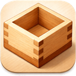

まるでマスですくうように
簡単に正確にスクリーンショットを作成します
ターミナルから2行で完了
brew tap piggest/mas brew install --cask mas
メニューバーのMasアイコンをダブルクリックするだけで範囲選択モードに。
ドラッグで撮りたい範囲を選択。選択した部分がそのまま切り取られます。
矢印、テキスト、ぼかしなど豊富な編集ツールですぐに注釈を入れられます。
全画面、範囲選択、ウィンドウ、キャプチャ枠。ショートカットキーですばやく撮影。前回の範囲も記憶します。
矢印、四角、丸、テキスト、ペン、マーカー、モザイク。必要なツールがすべて揃っています。
スクリーンショット内のテキストを認識。文字単位で選択してコピーできます。日本語・英語対応。
不要な部分をカット。キャプチャ後にすぐ範囲を調整できます。
画面の指定領域をアニメーションGIFとして録画。操作手順の共有やバグ報告に最適です。
編集した画像をそのまま他のアプリにドラッグ&ドロップ。注釈付きの画像がすぐに使えます。
キャプチャ履歴をサムネイル付きで管理。お気に入り登録やフィルタリングですぐに見つかります。
フローティングツールバーからワンクリックで切り替え
macOS 13.0以降対応・無料
ダウンロードまたは brew tap piggest/mas && brew install --cask mas